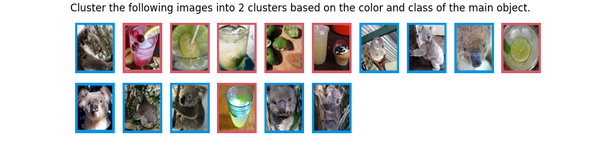
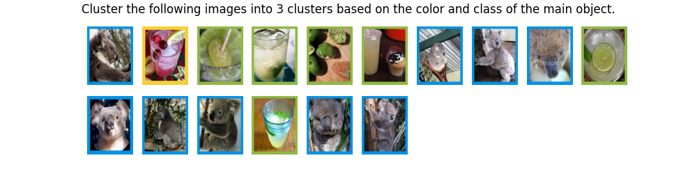
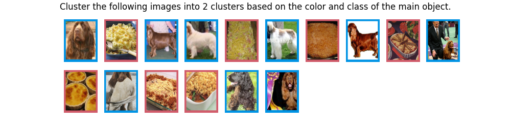
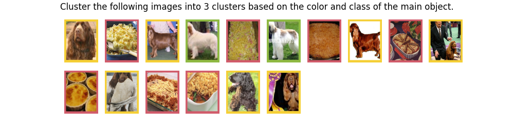
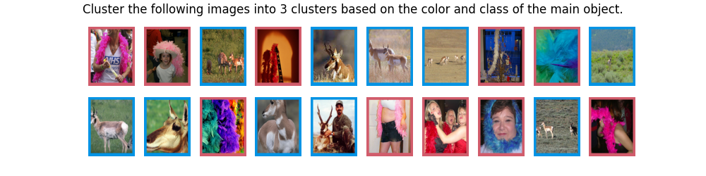
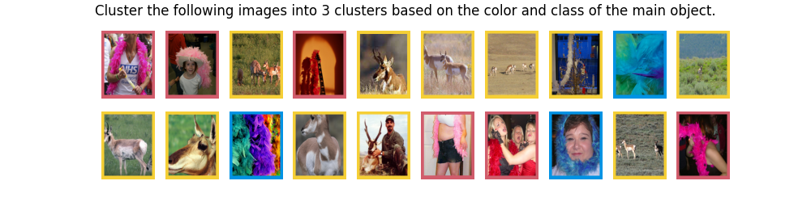
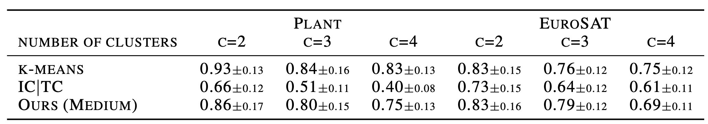

In-Context Clustering with LLMs
S1. Visualization of Attention
Heatmap visualization of average attention scores of each data point to be clustered. Darker shades indicate higher attention scores. The x-axis and y-axis represent ground truth cluster labels. Attention maps in intermediate layers show similar salient patterns of clusters, while the attnetion in the beginning and end layers show vertical-slash patterns.
S2. Multi-Conditioned Image Clustering
LLMs are capable of producing different clustering given different conditions. The color of the frame outside each image represents the predicted cluster label.






S3. Selective Attention Allocation
Visualization of attention allocation when deciding the cluster for the first image. Darker shades indicate higher attention scores. LLMs allocates attention differently to different patches across different layers.
S4. Additional results of CD-FSL datasets
ICC achieves comparable performance with k-means and significantly outperformns IC|TC (for more details about the data and baselines, please check sec4.2 of our submission). Since the captioning model used by IC|TC is not specialized in plant leaves and satellite images, it fails to provide useful information for clustering, indicating the limitation of the IC|TC apporach.
